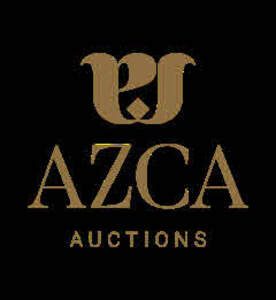

Trade Mark Journal No.2025/033 15 August 2025
UK00004244487 5 August 2025 (35,36)

- Class 35
- Auction and reverse auction services; Auction services; On-line auction bidding for others; Arranging of auction sales; Auction sales (Arranging of -); Conducting of auction sales; Arranging and conduction of auction sales; Arranging of auctions; Carrying out auction sales; Auctioning of vehicles; Auctioneering; Organisation of internet auctions; On-line auctioneering; Telephone and television auctions; Providing on-line auction services; Arranging and conducting of auctions and reverse auctions via mobile telephones; Arranging and conducting of auctions and reverse auctions via computer and telecommunication networks; Arranging and conducting of Internet auctions; Market analysis services relating to the sale of antiques; Arranging and conducting auctions; Arranging and conducting of television auctions; Conducting interactive virtual auctions; Bidding quotation; Arranging and conducting of telephone auctions; Auctioneering services; Auctioneering provided on the internet; Auctioning via telecommunication networks; On-line auctioneering services via the Internet.
- Class 36
- Antique appraisal; Appraisal (Antique -); Art appraisal; Appraisal (Art -); Antique appraisal services [valuation]; Appraisals [valuation] of antique; Valuations [appraisals] of antiques; Jewelry appraisal; Valuations [appraisals] of artworks; Jewellery appraisal [valuation]; Numismatic appraisal; Appraisal (Numismatic -); Coin appraisal; Jewellery appraisal; Art work valuations [appraisals]; Numismatic appraisal services [valuation]; Appraisals [valuation] of jewellery; Stamps (appraisal [valuation] of -); Appraisal of used automobiles; Valuations [appraisals] of jewellery; Appraisals [valuation] of stamps; Appraisal (Jewellery [jewelry Am.] -); Jewellery [jewelry (Am.)] appraisal; Valuations [appraisals] of valuables; Valuation services; Valuation of diamonds; Valuation of pictures; Valuations of works of art; Valuation of precious metals.
AZCA Auctions LTD